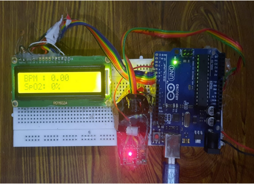

<!DOCTYPE html>
<html lang="en">

<head>
    <meta charset="UTF-8">
    <meta name="viewport" content="width=device-width, initial-scale=1.0">
    <title>Vishruti Portfolio Website</title>
    <link rel="stylesheet" href="https://cdnjs.cloudflare.com/ajax/libs/normalize/7.0.0/normalize.min.css">
    <link rel="stylesheet" href="https://cdnjs.cloudflare.com/ajax/libs/font-awesome/5.11.2/css/all.css"
        integrity="sha256-46qynGAkLSFpVbEBog43gvNhfrOj+BmwXdxFgVK/Kvc=" crossorigin="anonymous" />

    <!-- Update these with your own fonts -->
    <link href="https://fonts.googleapis.com/css?family=Source+Code+Pro:400,900|Source+Sans+Pro:300,900&display=swap"
        rel="stylesheet">

    <link rel="stylesheet" href="css/style.css">

</head>

<body>
    <header>
        <div class="logo">
            
        </div>
        <button class="nav-toggle" aria-label="toggle navigation">
            <span class="hamburger"></span>
        </button>
        <nav class="nav">
            <ul class="nav__list">
                <li class="nav__item"><a href="index.html" class="nav__link">Home</a></li>
                <li class="nav__item"><a href="index.html#services" class="nav__link">My Services</a></li>
                <li class="nav__item"><a href="index.html#about" class="nav__link">About me</a></li>
                <li class="nav__item"><a href="index.html#work" class="nav__link">My Work</a></li>
            </ul>
        </nav>
    </header>


    <section class="intro">
        <h1 class="section__title section__title--intro">
            Pulse Sensor Using Arduino<strong></strong>
        </h1>
        <p class="section__subtitle section__subtitle--intro"></p>
        
    </section>
    

    <div class="portfolio-item-individual">
        <p>Heartbeat rate information is crucial but calculation can be complex. This pulse sensor,
            designed using Arduino boards, is a plug-and-play solution for makers, students,
            developers, and artists to use heartbeat data in their projects.
        </p>

        <p> The MAX30100 is an optical pulse oximeter and heart-rate sensor, consisting of highintensity LEDs and a photodetector. Its working include heart rate measurement and
            pulse oximetry. The LEDs have different wavelengths.</p>
        
        <p> To get the readings keep your finger on the sensor until a signal is detected on the LCD
            or serial monitor.
            </p>
        
        

    </div>


    <!-- Footer -->
    <footer class="footer">

        <a href="mailto:divijkharche01@gmail.com" class="footer__link">vishruti.choudhary2020@vitbhopal.ac.in</a>
        <ul class="social-list">
            <li class="social-list__item">
                <a class="social-list__link" href="https://www.linkedin.com/in/vishruti-choudhary-7a0618209/">
                    <i class="fab fa-codepen"></i>
                </a>
            </li>
            <li class="social-list__item">
                <a class="social-list__link" href="https://www.instagram.com/vishruti_choudhary/">
                    <i class="fab fa-dribbble"></i>
                </a>
            </li>
            
            <li class="social-list__item">
                <a class="social-list__link" href="https://github.com/vishruti-choudhary/">
                    <i class="fab fa-github"></i>
                </a>
            </li>
        </ul>
    </footer>


    <script src="app/index.js"></script>

</body>

</html>
